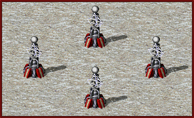
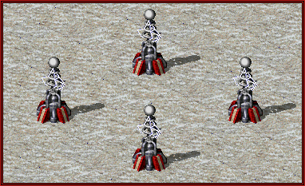

打开 game/indexl.html 游玩
按住鼠标拖动画面可移动画布
转动鼠标滚轮使画布放大缩小
按下两个 build 按钮进入两种塔的建造模式，然后鼠标移到地图上点击对应格子进行建造，再点击按钮取消建造模式；
sell 按钮进入卖塔模式，点击塔进行卖出，再点击按钮取消建造模式；
center 按钮点击后视角会复位；
pause/play 按钮可暂停或使游戏继续进行（暂停中也可以 build！）；
1X/2X/0.5X 按钮用于调节游戏速度。
↑↓←→：移动地图
r：变更拖动效果为平移或旋转
q：光棱塔建造模式
w：磁暴线圈建造模式
e：sell 模式
s：开关 stats
c：center 视角复位
p: 开关画中画
zoom 画布缩放
stats 帧数
isDragRotate 拖拽模式
AP 攻击力
ATTACK_CD 攻击间隔
ATTACK_RANGE 攻击范围
MAX_HP 最大生命值
AUTO_REPAIR_VAL 每0.1秒自动维修回复的生命值
MAX_RECEIVE_LASER_NUM 最大接受递光数
PER_RECEIVE_LASER_AP_AMPLIFICATION 每接受一束光后的攻击增幅
Zdog gsap
塔稍微多一点画面就很卡顿了，也许是我的技术不过关，但是我觉得 Zdog 还是比较适合做些小工艺品 ：）
灵感来源是这个视频：【心灵终结3.34】Ai混战第二期：4大t2防御塔比拼
强烈推荐心灵终结这款红警2 MOD
 


demo里是我在制作过程中的实验产物，有些代码不完整，有些最终没用上